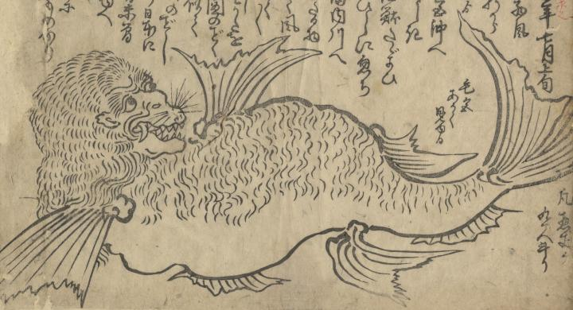

← 图鉴索引

顔は猿、体は魚に似た海獣。口には牙が生え、大きな鰭がある。
出典：親書誌：U426_nichibunken_0426：海獣図／日付：2016／資源識別子：U426_nichibunken_0426_0001_0000
Copyright (c)2010- International Research Center for Japanese Studies, Kyoto, Japan. All rights reserved.